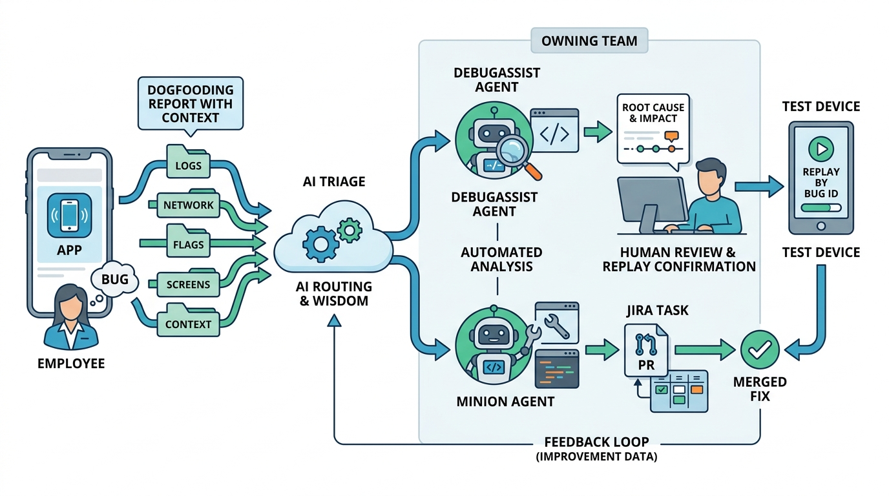

Part III — LIFECYCLE: The Feature Path, Rewired
From Bug Report to Fix: Wisdom, DebugAssist and the Closed Loop

Image generated by Google Gemini (gemini-3-pro-image-preview)
Part III — LIFECYCLE: The Feature Path, Rewired

Image generated by Google Gemini (gemini-3-pro-image-preview)